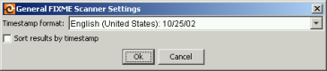

) on left side of the output window, select the checkbox in the dialog that appears, and click OK.
) on left side of the output window, select the checkbox in the dialog that appears, and click OK.If you want to timestamp your FIXME-like comments in source code, press the T button on the left side of the FIXME Scanner output window. This button adds today's date to all comments in the current output window (if they don't already have a timestamp in a recognised format). Note: Selection in the result panel has no effect here--all comments in the result window are processed by the timestamper, no matter which ones are or are not selected.
You can also sort results by timestamps. To do so, press the Filter button () on left side of the output window, select the checkbox in the dialog that appears, and click OK.
